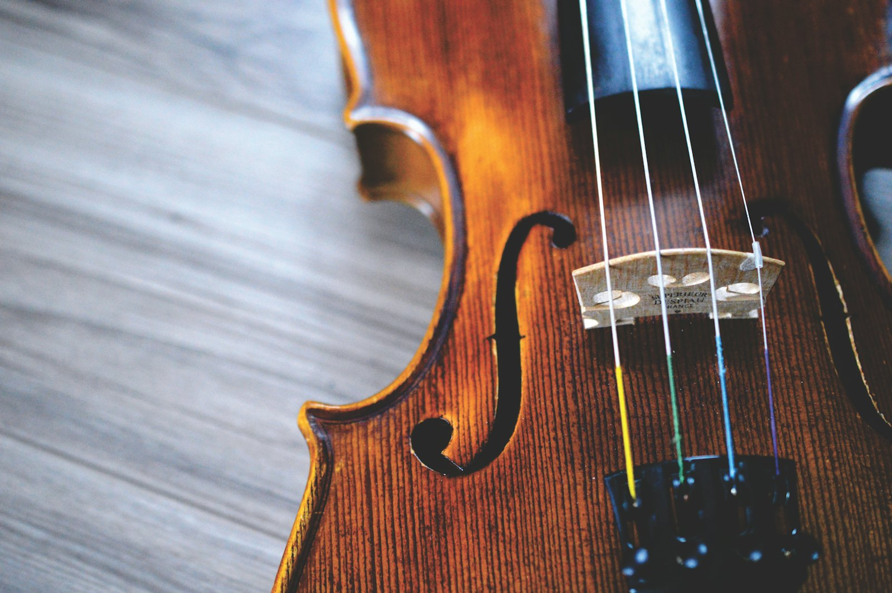
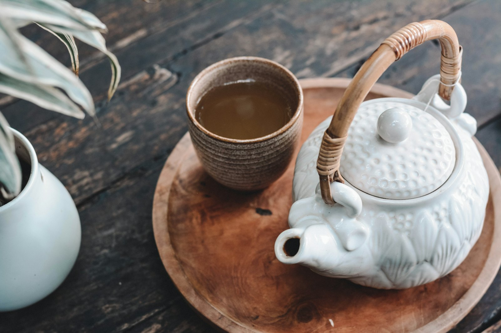

Cover · No. 19
The drawers behind the counter.
A spice counter keeps the color in front of the customer and the weight in a pencil ledger. We opened the shop with them for four mornings.
Leela Nair · 8 min
Cover · No. 19
A spice counter keeps the color in front of the customer and the weight in a pencil ledger. We opened the shop with them for four mornings.
Leela Nair · 8 min

Cover
A spice counter keeps the color out front and the weight in the back.
Place
A wooden boat, a lake under the peaks, and a timetable nobody argues with.

Craft
Inside a one-room shop that still cooks its own oil.

Craft
A pot of tea is how this office starts, and how it refuses to hurry.
Labor
Between two shifts, the jetty is a place where work is visible and unpaid.